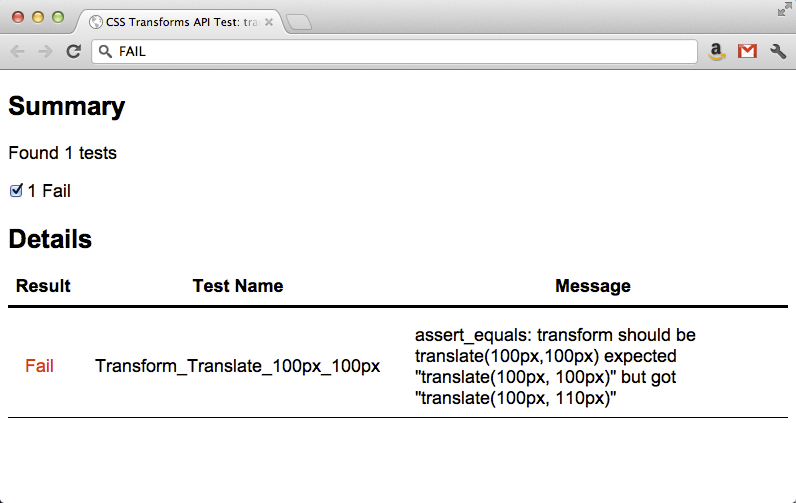

W3C测试教程
目录结构
- CSSWG测试代码库
- contributors
- ttwf_bj
- your_csswg_id
- incoming（<-工作目录）
- submitted

Reftest概览
- 两个文件: 测试文件 + 参考文件
- 测试文件使用了待测功能
- 参考文件没有使用待测功能，但在视觉上是一样的
- 自描述文本(手工和自动测试都适用)
- 跨浏览器并且跨平台
测试用例示例
CSS3 Transforms规范中transform属性的一个基本测试：使用translate()函数
规范链接:
http://www.w3.org/TR/css3-transforms/#transform-property
http://www.w3.org/TR/css3-transforms/#two-d-transform-functions

示例文件


所需的元数据: Title
测试文件
参考文件
所需的元数据: Author
测试文件
参考文件
所需的元数据: 规范链接
仅用于测试文件
所需的元数据: 参考文件路径
仅用于测试文件
所需的元数据: 断言
仅用于测试文件
大家尽量把这个写得完整一些，便于在测试失败时分析原因
测试
应用transform的测试元素
参考元素
可见的验证失败
元素只在测试失败时可见
测试失败的例子

自描述
当测试通过时页面应该如何渲染的简单句子
测试和参考文件
添加元素
测试文件
参考文件
提供商前缀
- 你可能需要给测试中的CSS属性添加提供商前缀
- 如果前缀是必要的，那么没有的话测试显然会失败
- 但是，当把测试提交到W3C时不能包含这些前缀
在测试开发时我们推荐使用的脚本:
http://leaverou.github.com/prefixfree
prefixfree.jsapi.js扩展可用于无前缀的JS API测试:
https://github.com/LeaVerou/prefixfree/tree/gh-pages/plugins
Reftest Q & A
JavaScript测试概览
- JavaScript测试通过编程的方式验证功能
- JavaScript测试比起参考测试有几点优势：
- 健壮
- 灵活
- 性能好
- 参考测试比起JavaScript测试有几点优势：
- 验证完整的渲染
- 易于理解
- 对于不支持JavaScript的客户端也可以工作
- JavaScript可以和参考测试一起使用
W3C提供的测试框架
testharness.js 和 testharnessreport.js
<script src="/resources/testharness.js"></script>
<script src="/resources/testharnessreport.js"></script>
- 所有的JavaScript测试都应该使用
- 包含常用的验证API
- 路径必须是根级的/resources目录
- 测试文件中应该存在
id="log"的元素- 测试结果表格会添加到这个元素，如果存在的话
测试函数
test(test_function, name, properties)
- 用于同步测试
- testharness.js中定义的
async_test()是用于异步测试的
- testharness.js中定义的
- 用于定义一个独立的测试用例
- 一个文件通常有多个
test()的调用
- 一个文件通常有多个
- testharness.js对于每一个
test()调用会显示PASS/FAIL信息
test() 参数 1: test_function
test(test_function, name, properties)
test_function必须是一个对象，不是一个函数调用test_function应该包含测试断言方法- 用法例子:
test(function() {assert_true(true)}, name, properties)
test() 参数 2: Name
test(test_function, name, properties)
name是用于标识测试的字符串，比如“Transform_Translate_100px_100px”name应该简短，唯一，并且不会改变name会显示在测试结果表格里
test() 参数 3: Properties
test(test_function, name, properties)
- 该参数是可选的，用于覆盖默认值
- 用法例子:
test(function() { assert_true(true) }, "test_name",
{timeout:1000,
help: 'http://www.w3.org/TR/spec#section',
author: ['Bill Gates <bgates@msn.com>', 'Steve Jobs http://apple.com/sjobs'],
assert: 'This test something.', 'This also tests something else.'})
断言方法
- testharness.js提供了很多断言方法
- assert_true, assert_false, assert_equals, assert_not_equals, ...
- 所有的断言必须位于对
test()的调用中- 位于外边的断言不会被正确地检测，并可能导致测试停止
- 所有的断言方法包含一个可选的
description参数，只在断言失败的时候才输出，用于提供额外的调试信息
断言示例
assert_equals(actual, expected, description)
actual: 所测功能的实际值expected: 期望值description(可选): 仅在断言失败时输出- 用法例子:
assert_equals(getActualData("myElement"), 100, "Expected value for myElement is 100")
测试用例示例
CSS3 Transforms规范中transform属性的一个基本测试：使用translate()函数
规范链接:
http://www.w3.org/TR/css3-transforms/#transform-property
http://www.w3.org/TR/css3-transforms/#two-d-transform-functions
元数据
<head>
<title>CSS Transforms API Test: transform translate</title>
<link rel="author" title="Your Name" href="mailto:youremail@address.com">
<link rel="help" href="http://www.w3.org/TR/css3-transforms/#transform-property">
<link rel="help"
href="http://www.w3.org/TR/css3-transforms/#two-d-transform-functions">
<meta name="flags" content="dom">
<meta name="assert" content="The transform should be translate(100px,100px)">
...
</head>
flags中的dom指明了JavaScript的支持是需要的
<head>
...
<script src="/resources/testharness.js"></script>
<script src="/resources/testharnessreport.js"></script>
</head>
- 导入testharness.js和testharnessreport.js
- 脚本的路径都指向根级的
/resources目录
正文
<body>
<div id="myDiv"></div>
<div id="log"></div>
<script>
// Set the transform
document.getElementById("myDiv").style.transform = "translate(100px,100px)";
// Verify that the transform was set as expected
test(function() {assert_equals(
document.getElementById("myDiv").style.getPropertyValue("transform"), //Actual
"translate(100px, 100px)", //Expected
"transform should be translate(100px,100px)")}, //Description
"Transform_Translate_100px_100px"); //name
</script>
</body>
myDiv用作测试元素 - 通过JS应用translatelog用作测试结果容器test()用assert_equals作为test_function
测试结果
通过
测试结果
失败
设计和编写测试用例的提示
- 注意规范中的算法描述部分
- 查找规范关于一致性需求的陈述（MUST, MUST NOT, SHOULD, SHOULD NOT, MAY）
-
- On getting, it must return its current value. On setting, if the new value is one of 'none', 'copy', 'link', or 'move', then the attribute's current value must be set to the new value. Other values must be ignored.
- If both 'left' and 'right’ are 'auto', the flex item must be positioned so that its main-start or cross-start edge (whichever is in the horizontal axis) is aligned with the static position.
- 单一的需求陈述通常需要多个测试来涵盖，一个测试也可以涵盖多个需求陈述
- 考虑特殊值及极端场景
- 当浏览器完全不支持规范时的测试结果应该是失败的
测试用例跟踪统计
Google Docs统计页面